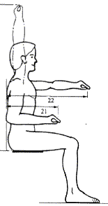
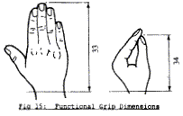
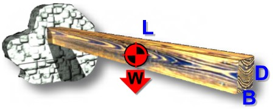
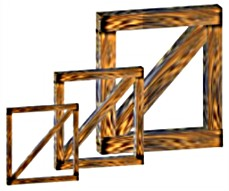

Noah's
Cubit
Home
Menu
COPYRIGHT TIM LOVETT
2004
.
.
What
is the most likely length for the cubit of Noah's Ark?
The
cubit is normally defined as the length from elbow to fingertip, but how long
was the arm?
(See
also Cubit References)
Contents
Cubits
used in previous studies
Some
cubit definitions
Cubit
Issues
A
modern cubit
Implications
of a long cubit for the Ark
Summary
This
study explores common cubit definitions, highlighting the possibility of the ark
being larger than current estimates. Previous studies have used a short cubit to show that there was
ample room on the ark. Likewise, stability and
seakeeping are also underestimated when calculated using a short cubit. However, a conservative
analysis of the strength and construction of the ark is exactly the
opposite - the long cubit becomes the "worst case" scenario. If the timber hull of Noah's Ark had to survive
heavy seas, then structural issues (such as leakage due to hull flexing) need to
be assessed. If Moses' record of the ark dimensions could
possibly imply the use of the long cubit, then structural analysis should employ
this scale as a conservative estimate.
"Most
writers believe the Biblical cubit to be 18 inches (457mm)" (Ref 1, p181). Some studies even use the shortest possible cubit - the
17.5" (445mm) short Hebrew cubit. This is a very conservative estimate in
terms of the size of the ark.
The
following table shows cubit lengths chosen by various creationist authors. This
table gives the impression that the 18 inch cubit is the limit to the cubit
length, but the reasoning is often nothing more than an attempt to be
conservative. These short cubits do not have any strong historical links to
early civilization - which were Noah's immediate descendents.
|
Year |
Reference |
Inch |
mm |
Based on... |
|
1961 |
The
Genesis Flood. John C Whitcomb, Henry M Morris, R & R Publishing 1961 |
17.5" |
445 |
"While it is certainly possible that the cubit referred to in
Genesis 6 was longer than 17.5 inches, we shall take this shorter cubit as
the basis for our calculations" p10 |
|
1971 |
The Ark of Noah. Henry M Morris, CRSQ Vol 8,
No 2, p142-144. 1971
|
18" |
457 |
"Assuming the cubit to be 1.5ft, which is the most likely
value" p142 |
|
1975 |
A
Comparison of the Ark with Modern Ships; Ralph Giannone, CRSQ Vol 12, No1,
p53, June 1975 |
18" |
457 |
"The cubit is understood to be 18 inches, which seems to be at
least approximately correct,..." |
|
1976 |
The
Genesis Record: Henry M Morris, Baker Book House, 1976: p181
|
17.5" |
445 |
"To
be very conservative, assume the cubit to have been only 17.5 inches, the
shortest of all cubits, so far as is known." |
|
1977 |
Was Noah's Ark Stable? D H Collins, CRSQ
Vol 14, No 2, Sept 1977 |
18" |
457 |
From
cubit list in Ramm, Bernard 1956, The Christian View of Science and
Scripture. p229. Collins says.. "For present purposes I will assume
the cubit equal to 18 inches" |
|
1994 |
Safety
Investigation of Noah's Ark in a Seaway; S.W.Hong et al , CEN TJ 8(1)1994
(AiG) |
(17.5")
17.72" |
(445)
450 |
"We adopted the common cubit...17.5 inches". After Scott R.B.Y 1959. Weights and
Measures of the Bible. The Archeologist, XXII(2).
Actual dimensions used in the study require a cubit of 450mm,
giving the exact figures for 13.5m depth and 22.5m breadth and 135m
length. |
|
1996 |
Noah's Ark: A Feasibility Study: John
Woodmorappe, ICR, 1996, p10 |
18" |
457.2 |
"All
the calculations in this work involving the Ark assume a short cubit of
45.72cm." (Wright G.R.H. 1985 Ancient Building in South Syria
and Palestine, Vol 1. E'J.Brill, Leiden. p419) |
|
2001 |
The
Most Amazing Ship in the History of the World; Prof. Dr. Werner Gitt,
Fundamentum; 2001, p7 |
17.22" |
437.5 |
Siloam tunnel measurement compared to Biblical record (Close to the
Hebrew
common cubit) |
(See
also Cubit References)
"The
actual length of the cubit varies from 18 inches to 25 inches." (Collins
1977)
Encyclopedia
Britannica says the cubit was "usually equal to about 18 inches". In
the case of Noah's Ark however, we are interested in the definitions of the
earliest cubits - not the most common. "The
probability is that the longer was the original cubit." (Easton's
Bible dictionary).
Ancient
cubits varied in their level of standardization. The Royal Egyptian cubit was
remarkably consistent and well defined. In Mesopotamia, cubit standards did not
survive (probably due to wood construction) - so investigation is limited to
clues in building proportions. Not all cubits were defined as the distance from
elbow to fingertip either, and there were usually hand-width, finger width
(digits) or spans subdividing the cubit.
Ancient
cubits could be classified into 2 main groups - long and short. The approximate
height of the person from whom the cubit was measured is tabulated below.
|
GROUP
|
CUBIT
|
Inch |
mm |
Stature (in) |
Stature
(mm) |
|
Short
Cubits |
Short Hebrew
|
17.5" |
445 mm |
5' 4" |
1636 mm |
|
Short Egyptian
|
17.6" |
447 mm |
5' 5" |
1646 mm |
|
Common |
18" |
457 mm |
5' 6" |
1683 mm |
|
Long
Cubits |
Babylonian royal |
19.8" |
503 mm |
6' 1" |
1852 mm |
|
Long Hebrew |
20.4" |
518 mm |
6' 3" |
1907 mm |
|
Royal Egyptian |
20.6" |
524 mm |
6' 4" |
1929 mm |
|
Extra Long |
Long
Babylonian |
24" |
610 mm |
7' 4" |
2246 mm |
Is
Noah's cubit too ancient to investigate?.
The
cubit has disappeared today, although in some countries it was still in use until around 1960 when
it was replaced by metric units. There
are many examples of measurement systems lasting through the ages. In a
continuous civilization, an important base-unit like length is not easily changed. Consider
the effort it took to deliberately convert to the metric system. For example,
the standard railroad gauge (4ft 8 1/2") is a
strange choice - the same gauge that was used in the hand drawn carts of the
English coal mines, that found itself in coach-building and eventually trains.. We measure angles using 90 degrees for a right angle. We
have never stopped counting 7 days as a week. The origin of
many measurement systems can go back centuries.
It is worth considering that
Noah's cubit would have been the only unit of length immediately after the flood and that Noah's three
sons were technically skilled builders. Furthermore, Noah lived for another 350
years in the new world and his son Shem was a contemporary of Abraham. Abraham
lived some time in Egypt and had influence (the Pharaoh liked his wife). Noah's cubit could
easily appear in these early civilizations. In fact, it is reasonable to
expect Noah's cubit to dominate every culture until the Babel incident.
The
Hebrew for Cubit is "ammah", derived from mother, as in
"mother unit of measure". The same word is used throughout the Old
Testament as a unit of length. This could convey the idea of a measurement
passed down from an ancestor, who defined the original or 'mother' cubit. Incidentally,
the word for mother is common throughout many languages.
As
for standards, the Egyptian cubit has survived intact in cubit standards of wood
and stone, as well as in the meticulous dimensions of their architecture. For
thousands of years
this cubit varied less than 5%. So it is quite likely that even the actual
length of Noah's cubit may have been passed down relatively intact, at least to
a few civilizations.
The
Long and the Short of it.
Noah's
Ark landed in the middle east. The tower of Babel was almost certainly
constructed in the same cubit as the ark. If dominant cultures were to travel
the least distance (or even stay put), then the ancient empires most likely to have
continued with Noah's cubit would probably come from Mesopotamia or its
vicinity. There are hints that Babylon was built on the site of the
original Babel. These cultures would still have an infrastructure that relied on this
unit of measure - hence the cubit
from Sumeria should be a pretty close estimate. The three ancient civilizations in this area have surprisingly
similar cubit definitions - the Egyptian royal cubit more closely defined then
the other units. Since the Hebrews spent 400 years in Egypt, it would be natural
to assume Hebrew cubits were an inherited Egyptian
measure. However, when the subdivision structure is compared, the Hebrew
cubit looks more like a Babylon import.
Not
that it matters much, look how similar they are;
|
Civilization
|
Name |
Inches |
mm |
|
Mesopotamia
(Iraq) |
kus |
20.6" - 20.9" |
522-532 |
|
Persia
(Iran-ish)
|
|
20.5" - 21.4" |
520-543 |
|
Egypt |
meh |
20.6" |
524 |
Known
for their meticulous construction and love of mathematics, the Egyptian cubit
was an accurate 20.6" (524mm). This length can be quite readily derived
from the study of construction proportions - such as the chamber
measurements in the Pyramids of Gezih. Better than this, actual cubit
standards have been well preserved in the dry conditions. See Petrie's
derivations of the royal Egyptian cubit.
In
Mesopotamia, wooden "cubit rods" decay in the wet soil, so the length
is obtained from buildings that were probably laid out in whole cubits. A copper
standard was unearthed, but the general picture is that cubits outside of Egypt
were less exact. Modern scholars find variation in
these measurements due in part to the lack of reliable records, as well as the tolerance limitations of ancient
construction.
Did
Moses know two cubits?
In
his final speech before the Sanhedrin, Stephen described Moses as "educated
in all the wisdom of the Egyptians" (Acts 7:22). Moses was obviously
familiar with the Egyptian royal cubit and intelligent enough to query its
origin. Probably not a Pharaoh - the short length of the
typical sarcophagus attests to this. Imagine Moses as a young man completing
his studies in mathematics being handed the Royal Cubit standard to calculate
the area of the palace foyer. Imagine the temptation to put this famous cubit against his
own arm. Surely Moses would have spotted the
anomaly - this was not Pharaoh's forearm.
For
this reason, many commentators claim the Egyptian royal cubit was an
exaggeration. The problem with this charge is that three different empires all
exaggerate - equally. If some Pharaoh had felt the need to appear larger than
life, he could at least have chosen a cubit superior to his rivals from the
Persian Gulf. Worse still, the later Egyptian empire was defining a cubit
slightly less than the average on the other side of the Arabian desert. A more
realistic assumption would be that all these early civilizations inherited their
cubit length from the one source.
Moses,
the author of both Genesis and Deuteronomy applies a different cubit definition
when he writes about a contemporary measurement of the enormous bed of King Og.
Not
rendered in the NIV, the OKJ translation of Duet
3:11 describes the "cubit of a man" as the unit of measure used
here. The giant Og, king of Bashan slept in a bed 9 cubits long. By
the short cubit (18") this is 13 1/2 feet, by the long cubit almost 16
feet. (Now that IS excessive). In the phrase "cubit of a man",
the word for man is "iysh" which is usually associated with a particular
man, not "adam" which is more general - like
"mankind". Moses, the obvious author/compiler of both Genesis and
Deuteronomy, appears to be making a distinction between the old cubit and the
cubit defined by typical forearm length of his day. From Moses' point of view, Genesis
was history, but Deuteronomy was current news "is it not in Rabbath of the
children of the Ammon? Deut 3:11". Moses, educated in Egypt and familiar
with the Royal Egyptian cubit of 20.6" (525mm), never made such a
distinction in Genesis. This indicates Genesis was measured in an ancient cubit,
not by the forearm of Moses' day. Since Moses is demonstrating his
awareness of two different cubits, he should have applied himself to the task of
defining Noah's cubit also - perhaps with a comment like "according to the
cubit of Noah". It appears he was satisfied to let the reader assume
it was the "old" measure - not distinguished from the Royal Egyptian
cubit. See also: Revell Bible dictionary
Solomon
knew two cubits.
2
Chron 3:3. ...Solomon was instructed for the building of the house of God. The
length by cubits after the first measure was threescore cubits...
Since
Solomon was capable of piecing a bit of history together, God told him to build
with the building cubit (the old long ones), not the everyday commercial cubits
(the new short ones). Later, in Hezekiah's time, the short cubit was used later
in Siloam tunnel (confirmed by modern measurements), so the "cubits after
the first measure" must have been the other ones. Long.
|
|
An
exaggerated cubit ... Or are we getting smaller?
Shakespeare
lived in a tiny house, and the old houses of England had low doors and short
beds. The English evolutionist would naturally assume our increasing stature is
a part of the evolution of man. Combine this with a few small Egyptian Pharaohs
and you have a tidy precept - ancient people were small. Unfortunately, this
does not work in Africa where supposed 'primitive' tribesmen can average well
over 6 feet. It must also ignore the impressive physique of the Pacific
Islanders 'discovered' by European sailors in the previous century, and a host
of other anomalies. Even today, evolutionists are surprised when an ancient
human is taller then expected.
The
Bible paints a different picture. The original creation was perfect, including
extreme longevity and obvious mental and physical prowess. Good health is more
likely to allow a person to grow to their correct height - at least in terms of
population averages. Deteriorating genetics and the startling nutritional
ignorance of many ancient urban people (e.g scurvy) would go a long way to
explain their short stature.
So
if the ante-diluvians were taller, we would expect Noah to be tall. The Ancient
cubits correspond to a person around 6ft 4" tall. This is tall, but not
impossible. In fact it is far more reasonable than an antediluvian cubit of
17.5" (163cm - 5ft 4in tall), almost certainly too small for Noah.
|
Dimensions
are not converted.
The
dimensions of the ark are 300 long, 50 wide and 30 high. These are round numbers
and the proportions are excellent for ship stability and sea-keeping
performance. (4) Most readers would assume these were the original numbers God
gave to Noah. Assuming these figures were recorded (probably by Shem),
Moses would have compiled them into his manuscript some years later. Being well
educated and alert, Moses would have been capable of converting these figures
into the equivalent units of his day.
However,
the numbers do not appear to have been modified. Conversion from one cubit to
another would produce ugly numbers. For example, if the original length had been
261 Royal Babylonian cubits, this would be 251 Royal Egyptian cubits. If Moses
had then rounded off to give dimensions in an apparent single significant figure
(3 hundreds, 5 tens, 3 tens) the error could be as high as 20% (For example; rounding off
251 to the nearest hundred adds an extra 49/251 = 19.5%, which is more than the
difference between the common short and long cubits.) Worse still, if the depth
had been rounded down from 34 to 30 (12%) then the L/D ratio is modified by 35%.
The Hong study showed that the dimensions were optimal within 20%. In other
words, rounding off to a single significant figure could force the proportions
outside the optimal values.
The
most reasonable assumption would be that Moses copied (or was told) the original
dimensions as exactly 300 x 50 x 30. Setting
the precedent for later Jewish scholars, Moses was no doubt careful to maintain
the original numbers.
People
like their kings to be tall.
The
Bible gives many examples of height being revered among men. God is displeased
with this tendency, and gives them a dud king that looks the part - King Saul.
The fact that he looked like a king indicates that kingship was linked to tall
stature.(1 Sam 9:2). Antediluvian
superiority aside, Noah's cubit would likely have come from a king, and a king
would most likely have been tall.
Reverence
for ancestry is another common theme - especially towards the early patriarchs.
It would be reasonable to assume that the owner of the forearm defining Noah's cubit was probably someone old and famous. Anyone old was
probably taller, and anyone famous was probably tall. Discounting Nephilim due
to their extreme ungodliness, a 20.6" cubit (6ft 4" person) is then
quite a reasonable choice - simply a tall antediluvian.
Some
Jewish tradition has Noah is the realm of the giants. The cubit does not show
this however, a 20.6" forearm length is a tall person - but no giant. This
misconception might be explained by the deterioration of health and stature
after the flood, making a 20.6" cubit seem superhuman. (e.g. Short
stature of Egyptian Pharaohs).
The
Bible gives some examples of height being revered among men. God is displeased
with this tendency, and gives them a dud king that looks the part - King Saul.
The fact that he looked like a king indicates that kingship was linked to tall
stature.(1 Sam 9:2). Antediluvian
superiority aside, Noah's cubit would likely have come from a king, and a king
would most likely have been tall.
|

|
Forearm
Hand Length. Posterior point of the elbow - dac tylion. (Ref 2)
Procedure:
With the beam caliper, measure the horizontal distance from the elbow (olecranon
process) to the tip of the middle finger.
Measure
your own cubit and compare results. Check if your cubit is around 28% of your
height.
The
Mishna (Jewish writings) states that the height of a man is 4 cubits (25%)
|
|

|
Forearm
functional reach + hand length. Anthropometric data for British military (UK
airmen) is freely available (Ref 3). A direct cubit was not measured, but can be
derived from the functional forearm reach (21) and the hand correction factors
(33 & 34), where a cubit = 21 + 33 - 34

|
|
1987 Measurements for UK
aircrew
|
| |
Measurement |
3rd
percentile
|
50th
percentile
|
97th
percentile
|
| |
stature
|
1658 |
1783 |
1901 |
| 21 |
cubit-grip
|
390 |
424 |
462 |
| 33 |
grip correction -
ext
|
178 |
195 |
212 |
| 34 |
grip correction -
clasp
|
107 |
117 |
127 |
| |
21 + 33 - 34
|
461 |
502 |
547 |
| |
cubit % of stature
|
27.80% |
28.15% |
28.77% |
The
mid-sized person flying planes in the UK had a cubit of 502mm (19.8"). UK
airmen were approx 1.5% taller than the US army measurements of 1988, dropping
to a 1% advantage in the more competitive 97th percentile. So these servicemen
were slightly taller than normal. "Clinical normality" in height is
defined as about the range 54"-79". The average stature worldwide is
1650mm ´ 80mm (64.96" ´ 3.15") for men and 60.5" ´ 2.95"
for women. (Ref 5).
Considering
Noah was only 10 generations from Adam and got the bronze medal in the
longevity records, it would be safe to assume he was a lot healthier (and taller) than the
average male on the planet today, or in the UK air force for that matter. Yet a
cubit of only 457mm (18") cubit corresponds to 28% of a mere 1632mm
(64.25") stature, well below the world average today. The picture is even
more grim and Noah becomes vertically challenged if the 25% Mishna rule is
applied. In any case a longer cubit would be a more realistic choice.
The
longer measures such as the Nippur cubit or the Royal Egyptian cubit are a
better match to archeological evidence, and to the Biblical framework of a
creation in bondage to decay. (Romans 8:21). A structural study of Noah's Ark
should take the more realistic long cubits into
consideration.
Implications of a long cubit for
the ark.
One
reason to prefer the shorter cubit is that it defines a conservatively small ark. This is the
best way to defend the ark against accusations of insufficient space - "How
could all those animals fit on the ark". Space requirements have been
documented by John Woodmorappe in "Noah's Ark: A Feasibility Study".
Using the 18" cubit (p50), he concludes that the animals would require only
half the floor space - and this is without putting cages one above the other
(p16). There is 15 feet between floors which is ample headroom.
However,
when making a case for the structural integrity of the ark, the long cubit
should be used. Whenever the forces on an object are mass-related, the stresses
increase in proportion to scale. This defines a maximum size limit to buildings,
bridges, aircraft and machines. The larger the vessel, the more critical the
structure. For example, the bending load applied by waves is considered to be
proportional to the length of the vessel to the power of 3.5. See Wave
Bending Moment
|

|
Stress
increases with Size
Consider
a rectangular beam (BxD) cantilevered over a length (L), supporting its own
weight (W);
Stress
= 3 x W x L / (B x D2).
If
you double the scale, you will double all the dimensions, which will increase
the weight 8 times.
So
Stress = 3 * 8W * 2L / (2B * (2D)2 ) = 6WL/(BD2), which
means stress has also doubled.
|
Generally
speaking, as scale increases mass related forces (like weight) increase by scale3,
but the cross-sectional area only increases by scale2. Since Stress =
Force / Area, the stress increases by scale3/scale3, or
scale1 - i.e. Stress is proportional to scale.
Therefore,
larger structures need to be more stout. Thus a dinosaur is heavy boned, yet a
spider can have whisker thin legs. A flea can leap a hundred
times its own size, but an elephant can barely get off the ground. A small gymnast has an advantage,
a cat can fall out of a tree and walk
away, and Tyrannosaurus Rex was probably rather clumsy. So the fact that an ant
can carry seven times its own weight is not so amazing after all.
In
engineering, the same applies to boats, buildings and planes. Have you noticed
how we haven't really made things much bigger than we did 30 years ago? We can't
unless we find a material that is many times stronger than what we had before.
Assuming
sufficient wave size (probably a reasonable assumption), a longer cubit makes
structural strength a more significant issue for the ark.
|

|
Large
size demands a stout structure.
We
need to keep the stress within safe limits, so any increases in size must have a
corresponding increase in the stoutness of structural elements.
In
the previous example we wanted to double the length of the beam. This requires a
4 fold increase in breadth and depth, increasing the section modulus 64 times,
but the mass only 32 times - thereby maintain the same level of stress.
So
building a larger ark is not simply a case of scaling everything up. The
increase in length requires a even greater increase in breadth and depth of the
structural beams. This obviously results in a maximum size for the vessel - when
you end up with a structure of solid wood.
All
wood and no rooms!
|
So
how does this effect the ark? The table below shows what happens when you
increase the size of the cubit. This assumes a draft of 15 cubits (half the
depth) which could be interpreted from the account of the floodwater being more
than 15 cubits above the mountain tops. (Indicating that the ark could not run
aground) Gen 7:20. Though not conclusively fictitious, the Babylonian long cubit
of 24" is less likely because it did not appear in multiple empires - the
best indication of prior date. (especially prior Babel dispersion).
Selecting
the most likely cubit is no trivial matter, the mass of the ark could increase
at least 50%.
|
GROUP
|
CUBIT
|
Inch |
mm |
Ark Length |
Tonnes |
% Increase |
|
Short
Cubits |
Short Hebrew
|
17.5" |
445 |
133m |
20255 |
100 % |
|
Short Egyptian
|
17.6" |
447 |
134m |
20604 |
102 % |
|
Common |
18" |
457 |
137m |
22041 |
109 % |
|
Long
Cubits |
Babylonian royal |
19.8" |
503 |
151m |
29336 |
145 % |
|
Long Hebrew |
20.4" |
518 |
155m |
32085 |
158 % |
|
Royal Egyptian |
20.6" |
524 |
157m |
33279 |
164 % |
|
Extra Long |
Long
Babylonian |
24" |
610 |
183m |
52245 |
258 % |
Factors
that could require increased strength of the hull include hull shape, large wave
size, uneven load distribution on the ark, high wind speed, minimal deflection
to prevent leakage, collisions with floating debris, launching and beaching
loads.
One
factor that eases structural requirements is the short working life of the ark.
Although the occupants may have been confined to the ark for over a year, the
voyage itself lasted only 5 months. (or even less if the ark was launched near
the end of the 40 days)
See
also Cubit References
References
1.
The Genesis Record; Henry M Morris, Baker Books, 1976
2.
National Biodynamics Laboratory http://www.nbdl.org/NCSDB3/Anthropometry/anthro_pages19-29.pdf
3.
1988 Anthropometric Survey of U.S. Army Personnel: Methods and Summary
Statistics - a technical report (NATICK/TR-89/044) authored by Claire C.Gordon,
Thomas Churchill, Charles Clauser, Bruce Bradmiller, John McConville, Ilse
Tebbetts, and Robert Walker Wendy Murray
4.
Ministry of Defense.(00-25 Part 2) Human Factors for Designers of Equipment Part
2: Body Size. Feb 1997 http://www.dstan.mod.uk/data/00/025/02000200.pdf
5.
Anthropometrics and Design. Lecture notes. http://ergo.human.cornell.edu/DEA325notes/anthrodesign.html